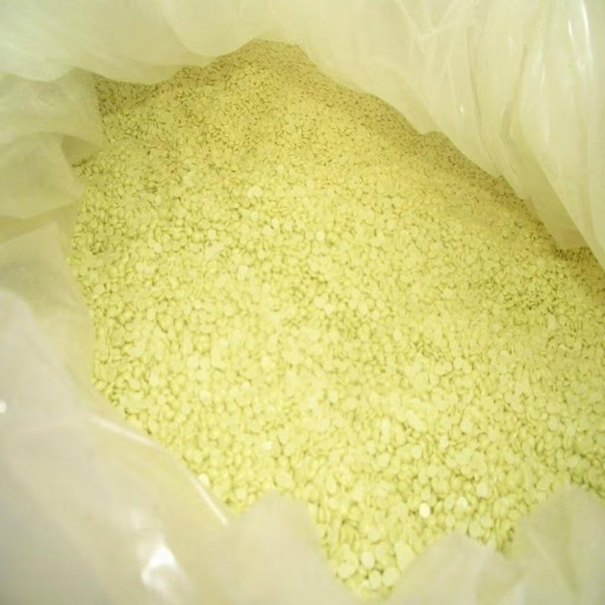

Сера техническая — важный промышленный продукт, используемый в производстве серной кислоты, удобрений, резины, а также в бумажной и химической промышленности.
| № | Наименования показателя | Норма |
|---|---|---|
| 1 | Массовая доля серы, %, не менее | 99,95 |
| 2 | Массовая доля золы, %, не более | 0,03 |
| 3 | Массовая доля органических веществ, %, не более | 0,03 |
| 4 | Массовая доля кислот в пересчете на серную кислоту, %, не более | 0,003 |
| 5 | *Массовая доля влаги, %, не более | 0,2 |
| 6 | Механические загрязнения | не допускается |
| 7 | Цвет | ярко-жёлтый |
*В комовой сере допускается повышение массовой доли влаги до 2% с пересчётом фактической массы партии на нормируемую влажность.